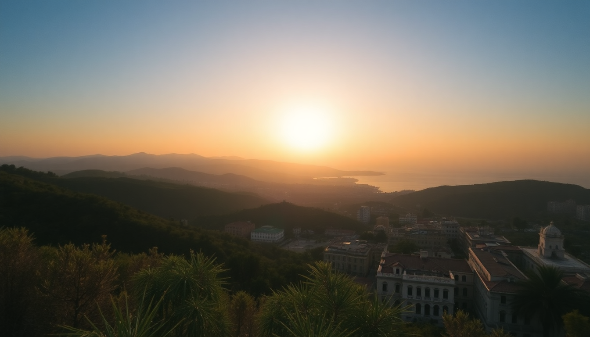

7 Days in Mexico: Mexico City, Oaxaca & San Miguel de Allende

I spent a week bouncing between three of Mexico’s most distinct cities — and it worked. Mexico City for chaos and museums, Oaxaca for mole and mezcal, San Miguel de Allende for cobblestones and quiet. Here’s exactly how I did it, what I’d skip, and where I’d spend more time.
Why visit three cities in one week?
You can cover a lot of ground if you fly between cities and keep each stop to two nights. Mexico City needs at least two full days, Oaxaca deserves two, and San Miguel de Allende works as a two-night wind-down. I booked flights for the longer legs — Mexico City to Oaxaca, and Oaxaca to San Miguel — and used a shuttle for the final drive to the airport. The key is not to overpack each day. One major activity per morning, then wandering in the afternoon.
What should you do in Mexico City?
I started in Condesa, a neighborhood that feels like a tree-lined European district but with taco stands on every corner. My first morning, I hit Museo Nacional de Antropología in Chapultepec Park — it’s huge, so focus on the Mexica and Maya halls. After that, I walked through the park to Polanco for lunch at Contramar (get the tuna tostadas and the pescado a la talla). Reservations are essential here.
For the second day, I took an early Uber to Coyoacán to see Frida Kahlo’s Casa Azul. Book tickets at least a week ahead — they sell out. Afterward, I wandered the Mercado de Coyoacán for a torta de cochinita pibil from a stall called Tostadas Coyoacán. In the evening, I joined a Lucha Libre show at Arena México. It’s touristy but genuinely fun — buy tickets from the official site, not scalpers.
- Stay: Hotel Condesa DF (boutique, rooftop bar, walking distance to Parque México)
- Eat: El Huequito for al pastor tacos (multiple locations, the Condesa one is reliable)
- Skip: The Zócalo at midday — too crowded and hot. Go early morning or evening.
How do you get from Mexico City to Oaxaca?
I flew. Volaris and Aeroméxico both run direct flights from Mexico City International Airport (MEX) to Oaxaca International Airport (OAX) — about an hour. I booked a morning flight so I arrived by 10 AM. The ADO bus takes seven hours and costs less, but for a week-long trip, the flight saves a day. From the Oaxaca airport, a pre-paid taxi into the city center costs around $15 USD.
What’s worth doing in Oaxaca?
Oaxaca City is small and walkable. I stayed in Centro Histórico, a block from the Zócalo. The first afternoon, I took a mezcal tasting tour at Mezcaloteca — they explain the agave varieties and production methods without the hard sell you get in tourist bars. For dinner, I ate at Casa Oaxaca (rooftop, reservations required, try the mole negro).
The next morning, I booked a cooking class with Casa de los Sabores. We went to the Mercado de la Democracia to buy ingredients, then made mole, tlayudas, and chapulines (grasshoppers — crunchy, salty, worth trying). The class runs about four hours and includes lunch. In the afternoon, I walked to Monte Albán, the Zapotec ruins on a hilltop 20 minutes from the center. The site is impressive for its scale and views, not for intricate carvings — plan 90 minutes there.
- Stay: Hotel Casa Oaxaca (colonial courtyard, excellent restaurant)
- Eat: Mercado 20 de Noviembre for grilled tasajo and cecina (the charcoal-grilled meat section)
- Skip: The Tule Tree — it’s a big trunk in a small town, and the 30-minute drive isn’t worth it.
How do you get from Oaxaca to San Miguel de Allende?
This is the tricky leg. There’s no direct flight. I flew from Oaxaca to Querétaro International Airport (QRO) on Aeroméxico (2 hours, one stop in Mexico City). From Querétaro, I took a pre-booked shuttle from Bajiogo (about $30 USD, 1 hour) to San Miguel. The shuttle drops you at the central bus station or your hotel. Alternatively, you can fly into León Bajío International Airport (BJX) and take a similar shuttle — both work.
What should you do in San Miguel de Allende?
San Miguel is all about the aesthetic. I spent my first evening walking the El Jardín (the main square) and climbing up to Parroquia de San Miguel Arcángel — the pink neo-Gothic church is the city’s icon. For dinner, I ate at The Restaurant (that’s the name) on Sollano 16 — they do a tasting menu with local ingredients. It’s pricey but worth one night.
The next day, I took a free walking tour from the tourist office on the square — 90 minutes, tips expected, covers the city’s history and architecture. In the afternoon, I visited Fábrica La Aurora, a converted textile factory turned art gallery and design space. It’s air-conditioned, free, and a good escape from the midday sun. For lunch, I grabbed a gordita at El Pato on the square — simple, cheap, authentic.
- Stay: Hotel Matilda (modern art-filled boutique, pool, quiet location)
- Eat: Tacos Don Felix on Calle de la Pila (al pastor, cash only, no seating)
- Skip: The hot air balloon ride — overpriced and the views are just as good from the hill at El Mirador (free).
FAQ
Is this itinerary too rushed? Yes, if you like slow travel. But if you’re comfortable with early flights and one major activity per day, it works. You’ll see the highlights of each city without feeling like you’re in transit every day. I’d add a day to Oaxaca if I could.
What’s the best time of year for this trip? November through March is dry and mild. I went in late January — Mexico City was 70°F, Oaxaca was 75°F, San Miguel was 65°F at night. Avoid July through September for rain, and December for crowds.
Do I need to book everything in advance? For Mexico City: book Frida Kahlo tickets and Contramar reservations at least a week out. For Oaxaca: book the cooking class and Casa Oaxaca dinner 2-3 days ahead. For San Miguel: you can wing it, but book the hotel early — it’s a weekend destination for Mexico City residents.
Conclusion
- Fly between cities to save time — ADO buses only if you have extra days.
- In Mexico City, focus on Condesa/Coyoacán and skip the Zócalo midday crush.
- In Oaxaca, prioritize the cooking class and Monte Albán over the Tule Tree.
- In San Miguel, spend your time walking and eating — the art scene is a bonus.
- Book key meals and tours ahead, especially in Mexico City and Oaxaca.